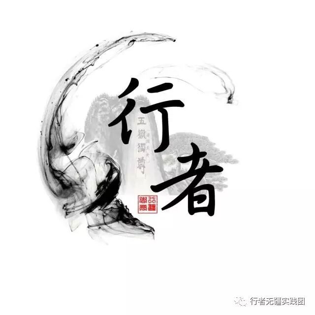
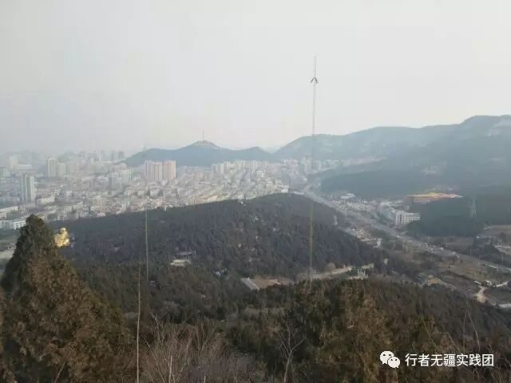
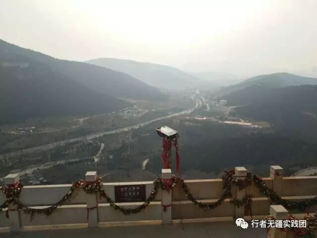
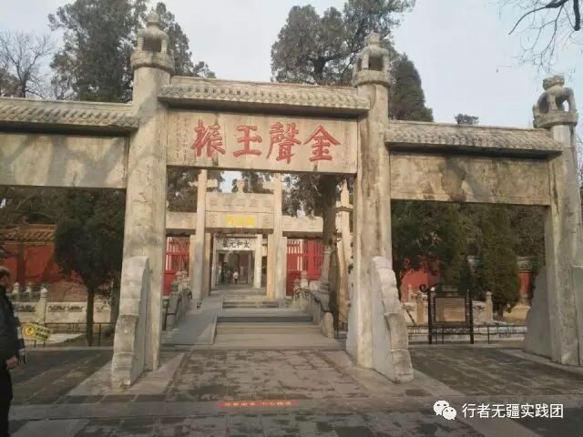
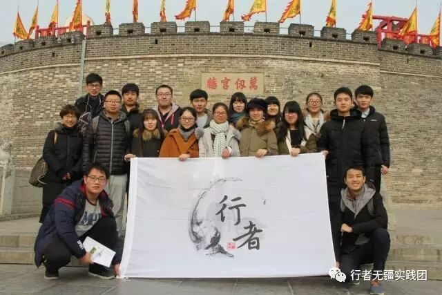

来自行者的第二封信|匆匆山水行，殷殷游子情
匆匆山水行
殷殷游子情
文：王鼎程
当列车徐徐驶入这片土地时，正是八九点钟的时刻，新日熠熠生辉，一切似乎都充满着活力与朝气。很多同伴都是重返故土，而对我这个异乡人则是彻彻底底的初来乍到，但当我们的双脚切实地接触到她时，我们所想的都是：山东，我来了！

初遇济南，风轻日暖。一路上舟车劳顿所带来的疲惫不适，似乎都在邂逅这座极具魅力的千年泉城时化为虚无。
放眼泉城，满心的期待与欣喜。走过有着百年历史、充斥着历史文化气息的山东大学，感受了“学无止境，气有浩然”的真切魅力。
想做好文化调研，就要真正融入到这座城市里，熟悉这里的一草一木，熟悉这里人的生活并融入到他们中去，而熟悉一个地方的呼吸自然是要去他们最容易放松的地方——泉城公园、泉城广场。济南的风自是带着与大盘妖风不同的温柔，所以即便冬季带来了萧条，马路边，竹林旁，仍然时不时有稚子戏耍，老人漫步；而夜晚的泉城广场，仍然充斥着人们愉悦的声响，如约而至的喷泉，五彩缤纷的霓虹灯——无不彰显着这座千年文化名城活力四射的一面。
来济南，当然不能错过济南“三胜”。
漫步在“四面荷花三面柳，一城山色半城湖”的大明湖畔，凝望过有着“天下第一泉”美誉的趵突泉泉群，但给我留下最深印象的却还是似乎并没有那么出名的千佛山（或许是分组行动，我们组在千佛山停留时间最久的缘故）。
漫步在林荫小道，微风轻拂脸颊，仿佛就要醉在大自然迷人的怀抱中。虽没有泰山的高耸巍峨，气势磅礴，但我想说285米的千佛山想攀登至顶也绝非易事。山风吹来，空气格外凉爽。我们站在高峰极目远眺：泉城胜景伏在眼底，山下雾蔼树隐，麦田澄黄如金；近观足下，松柏吟唱，石老而阔，好一派生机盈然。山风劲吹，天空金光闪烁。
放眼望去，一眼便看到了我们来时观摩过的弥勒佛像。这尊巨大的金属铜像，从山顶上看去，金光闪闪，如现眼前。它迎来送往，身不知寒暑，意不存望想。
千佛山有一幅楹联：“笑到几时方合口，生来无日不开怀。”四川峨嵋山灵岩寺也有一幅楹联：“大肚能容，容天下难容之事；开口便笑，笑世间可笑之人。”弥勒佛的无忧无虑，无私无畏，对当今社会的人们不是一种启迪吗？


“岱宗夫如何，齐鲁青未了”——五岳之首的泰山闻名天下，而静卧泰山脚下的岱庙又别有一番风味。
初临城墙之下，古老城墙崇墉百雉，将外面的车水马龙人世喧嚣皆拒之墙外，独留一份静谧安宁与袅袅香烟相守。
步进其中，楼阁庙宇庄严宏大，千年壁画细致传神，古亭汉柏擎天撼地，铜亭铁塔璀璨无双……巧夺天工的前人匠艺、浓厚的文化底蕴虽经时间冲蚀却依然不减风姿!
去一次岱庙吧，找寻自己的精神信仰!
至于那巍峨高耸，“九曲十八盘”的泰山，只仰望也足够领略其风采了!（冬天天冷山路崎岖，加之又是在晚上，保证团队安全爬至洪门就返回了。）
三舍茅草屋，一代圣贤府。如果说前面景致带给我的是视觉震撼，那三孔带给我的绝对是心灵震撼了!
何为“仁”？
何为“义”?
是这千年沧桑的柏树容纳群鸟于枝头?是碑亭与大殿勾心斗角结构精妙?是鲁壁碑在焚书坑儒时夹缝生存流传于世的勇气与智慧?是三千学子修习杏林的耐力和毅力。
海纳百川。这句话应该可以回答了。
那三间茅屋，藏有多少心酸和痛苦，及瓶颈时的绝望?
“仁”，的确是一个精美的字。这小小的天地，却容纳了一个宇宙。


为期近五天的文化调研就这样圆满结束。
没有比脚更长的路 ，没有比人更高的山。有些路，总要去走走才能体会不同；有些景，总要去亲自看看才能感受魅力。
五天的“行者无疆——山东文化调研”之行让我亲身看到了很多不一样的风景，开阔眼界，长了很多知识，又认识了更多志同道合的伙伴，在自我努力和团队协作中，见证友谊与成长!
山东之行，真的，不虚此行!
这是一次别样的文化苦旅，
更是一次心灵的成长历程!
“行者无疆”，我们明年再会!